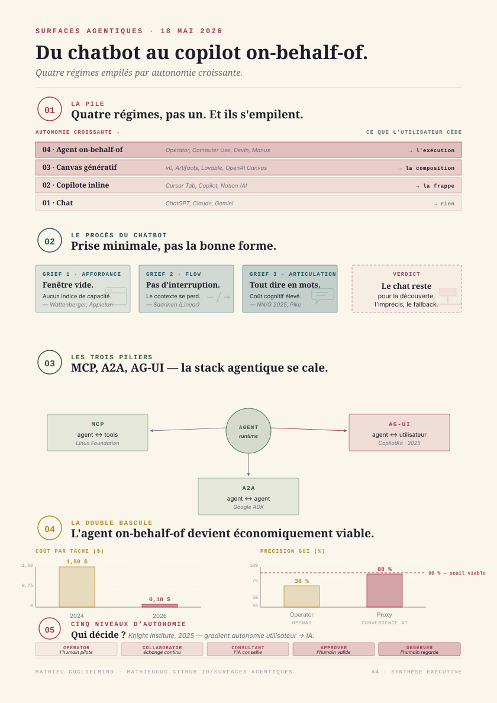

Surfaces agentiques
Du chatbot au copilot on-behalf-of — comment l'utilisateur final accède à un agent.
¶ Synthèse exécutive
- La surface mange le modèle. Ben Thompson l'écrit en mars 2026 à propos du lancement de Microsoft Copilot Cowork à 99 $/siège : « livrer un produit agentique convaincant exige d'abandonner l'objectif d'être model-agnostic. Un agent, c'est un modèle ET un harness, deux pièces intégrées »1. Le harness — donc, in fine, la surface d'accès que l'utilisateur final voit — est devenu le centre de gravité concurrentiel. Sierra (Bret Taylor) vaut 15,8 milliards de dollars en mai 20262 sans avoir entraîné un seul modèle ; sa valeur tient à la surface customer-service qu'elle construit autour des LLM existants.
- Quatre régimes d'accès, pas un. Le chat de ChatGPT a installé la croyance qu'on parle à un agent comme à un humain dans une fenêtre vide. Trois autres régimes ont émergé : le copilote inline (Cursor Tab, GitHub Copilot, Notion
/AI) ; le canvas génératif (Vercel v0, Claude Artifacts, OpenAI Canvas) ; l'agent on-behalf-of (Operator, Computer Use, Devin, Manus). Choisir le bon régime avant de coder l'agent change tout : ce sont des architectures, des contrats utilisateur et des risques différents. - Le procès du chatbot a déjà eu lieu. Amelia Wattenberger (20233), Maggie Appleton (20234), Linus Lee5, Geoffrey Litt6, Karri Saarinen (Linear, avril 20257) et Allen Pike (avril 20258) ont produit en deux ans le procès du chat. Diagnostic convergent : pas d'affordance, pas de flow, manipulation indirecte, articulation forcée. Le NN/G le rejoint avec Overcoming the Articulation Barrier9.
- AG-UI est le protocole qui standardise la prise. Né en mai 2025 chez CopilotKit, AG-UI formalise le tuyau d'événements entre un backend agentic stateful et une UI10. Pas un framework, un transport — 17 événements core (lifecycle, message, tool call, state delta), bi-directionnel, agnostique de transport. Adopté par LangGraph, CrewAI, Mastra, Microsoft Agent Framework, Google ADK, AWS Strands, Pydantic AI, Agno, LlamaIndex, AG2, et — en tier community — par le Claude Agent SDK11. C'est le pendant de MCP côté frontend : la stack agentique se cale sur trois piliers — MCP (agent ↔ tools), A2A (agent ↔ agent), AG-UI (agent ↔ utilisateur).
- Le canvas est devenu un IDE. Vercel v0 n'est plus un générateur de composants : c'est un éditeur Next.js full-stack hébergé avec Git, sandbox, DB Supabase/Snowflake — 3 millions d'utilisateurs déclarés au podcast Sequoia Training Data12, 10 % des signups Vercel viennent désormais de ChatGPT qui recommande v0. Claude Artifacts a été consolidé en avril–mai 2026 dans une VM unifiée qui exécute code, fichiers, Skills, Computer Use et MCP dans le même sandbox13. Lovable a fait 100 M$ d'ARR en 8 mois sur la même promesse en B2C14.
- L'agent on-behalf-of n'est viable commercialement qu'à 0,05–0,15 $ par tâche. Le coût par tâche d'agent navigateur est passé de 0,50–1,50 $ (2024) à 0,05–0,15 $ (2026), et la précision GUI a franchi 90 % avec Claude Opus 4.7 et GPT-515. C'est cette double bascule économique qui débloque la vague de production. Anthropic Claude Computer Use atteint 44 % au benchmark OSWorld (×3 en un an) ; Operator OpenAI fait 38,1 % ; Convergence AI Proxy passe 88 % sur WebVoyager.

¶ 1. Pourquoi la surface mange le modèle
L'industrie LLM s'est déplacée par bascules. ChatGPT a installé en novembre 2022 l'idée qu'on parle à un agent dans une fenêtre vide. Quarante-deux mois plus tard, on a passé suffisamment de temps avec cette surface pour savoir qu'elle est faible. Quatre vagues s'enchaînent : chat, copilote inline, canvas génératif, agent on-behalf-of. Et toutes les quatre coexistent — elles ne se remplacent pas, elles s'empilent.
Andrej Karpathy a verbalisé la bascule produit au Sequoia AI Ascent 2026 le 29 avril : « Autour de décembre 2025, quelque chose a basculé. Je suis passé de 80–20 à 20–80 — j'écris moi-même 20 %, l'agent écrit 80 %. Je ne me souviens plus de la dernière fois où j'ai dû corriger l'agent »16. Sa thèse Software 3.0 — prompter un interpréteur LLM plutôt qu'écrire du code (1.0) ou entraîner un réseau (2.0) — naturalise le passage de l'IDE comme surface principale à l'agent comme surface principale. Sa pet peeve de l'industrie : « Pourquoi les gens me disent encore quoi faire ? Quelle est la chose que je dois copier-coller à mon agent ? » — c'est-à-dire : la surface inline reste un goulot tant qu'elle exige des copier-coller manuels.
Ben Thompson formule la même chose côté business. Le lancement de Microsoft Copilot Cowork à 99 $/siège/mois (tier E7) en mars 2026 est, pour lui, « l'aveu fondateur de la vague 4 » : Microsoft, qui défendait depuis trois ans la posture model-agnostic, reconnaît qu'on ne livre pas un produit agentique convaincant en empilant des LLM modulaires1. Il faut intégrer modèle et harness. Et ce harness, c'est exactement ce que ce rapport va décortiquer — sous l'angle de la surface d'accès que l'utilisateur final voit, manipule, et finit par préférer ou rejeter.
Le Nielsen Norman Group apporte le cadre théorique. Dans AI: First New UI Paradigm in 60 Years (Jakob Nielsen, 2023), l'enquête identifie une rupture : après le batch processing (1945–1964) et l'interaction directe / command-based (1964–2020), on entre dans l'ère de l'intent-based outcome specification17. L'utilisateur ne dit plus quoi faire à l'ordinateur ; il dit quel résultat il veut. Cette bascule a une conséquence directe sur la surface : si on spécifie un résultat plutôt qu'une action, il faut une interface qui montre les états intermédiaires, qui propose des affordances de correction, qui permet l'intervention sans recommencer.
Une autre formulation, simple et opératoire : « A chatbot answers, a copilot suggests, an agent acts, and a digital employee persists », écrit Taskade début 202618. Cette gradation — répond / suggère / agit / persiste — capture la trajectoire d'autonomie croissante des produits AI 2022–2026. À chaque cran, la surface change. Et à chaque cran, l'utilisateur abandonne une part du contrôle de bas niveau qu'il maîtrisait — la frappe (copilot), la composition (canvas), l'exécution (agent autonome).
Le mot surface mérite d'être ancré. J'appelle ici surface d'accès à un agent l'ensemble des points d'interaction visibles côté utilisateur : la fenêtre, les contrôles, les feedbacks, le rendu des résultats intermédiaires, les options de correction et d'interruption. C'est tout ce qui n'est pas le modèle ni le harness backend (couvert dans les dossiers Agent SDK et Harness agentiques). C'est le contrat d'expérience que le produit pose au moment où l'utilisateur s'en sert.
La surface est aussi ce qui matérialise les choix de design d'autonomie. Le Knight First Amendment Institute de Columbia a publié en juillet 2025 un papier important — Levels of Autonomy for AI Agents — qui formalise cinq rôles utilisateur (operator, collaborator, consultant, approver, observer) selon le degré d'autonomie accordé à l'agent19. La thèse-clé : l'autonomie n'est pas un sous-produit de la capacité du modèle, c'est une décision de design — et elle doit être exposée explicitement à l'utilisateur. On y revient au §8.
¶ 2. Le chatbot et son procès
Le procès du chat comme surface universelle est désormais un genre éditorial à part entière dans la communauté design. Il faut le résumer fidèlement, parce que ce procès cadre tout ce qui suit — et parce que les arguments sont solides.
Amelia Wattenberger, Why Chatbots Are Not the Future of Interfaces (2023). Le texte fondateur. Trois arguments load-bearing3 :
- Un bon outil rend clair comment il doit être utilisé. Un champ texte ChatGPT ressemble à une barre Google, à un login form, à un champ carte bancaire — aucune affordance distinctive. L'utilisateur doit deviner, échouer, retenter. Wattenberger compare au piano : « on voit, sans rien apprendre, qu'on peut frapper toutes les touches et obtenir un son ; on comprend en quelques secondes qu'elles vont du grave à l'aigu ». Le chatbot n'a aucun équivalent.
- Le chat casse le flow state. Csíkszentmihályi : on est en flow quand on alterne action et feedback à très haute fréquence. Le chat impose un aller-retour permanent entre implement (j'écris une question) et evaluate (je lis une réponse). C'est l'inverse du flow.
- Le chat oblige à articuler tout, en mots, à l'avance. Or les humains pensent en demi-phrases, en gestes, en pointages. Le NN/G formalisera ce point en 2024 sous le nom d'articulation barrier : « obliger l'utilisateur à articuler verbalement chaque demande est une charge cognitive lourde »9.
Maggie Appleton, Language Model Sketchbook, or Why I Hate Chatbots (2023). Appleton accumule depuis 2022 des prototypes Figma d'interfaces non-conversationnelles — Daemons (personnages qui suggèrent des éditions dans la marge pendant qu'on écrit), Branches (arbres de causes et conséquences pour une affirmation). Sa thèse : la plupart des implémentations LLM devraient être « spell-check sized » — faire une chose précise, bien, dans le contexte d'édition4. Sa formule restée idiomatique : « language model legos need glue ».
Linus Lee (Notion AI), Imagining better interfaces to language models. Lee propose de remplacer l'interaction prompt-wait-retry par deux familles d'affordances5 : un interactive shell où l'agent et l'utilisateur manipulent un environnement partagé ; des manipulations directes de l'espace latent — sliders pour la longueur, le ton, le degré de formalité, drag-and-drop pour interpoler entre deux idées.
Geoffrey Litt, Malleable software in the age of LLMs (Ink & Switch, mars 2023, puis essai 20256). La contribution de Litt est moins une critique du chat qu'un changement d'horizon. Les LLM, en effondrant le coût de fabrication d'une UI, ouvrent un régime où les utilisateurs reshape leurs propres outils. Sa formule reste : « good tools become transparent — l'interaction directe (souris, manipulation) reste cognitivement plus rapide que le chat, donc la generative UI doit produire des affordances manipulables, pas des conversations ».
Karri Saarinen (Linear), Design for the AI Age (7 avril 20257). Saarinen radicalise le procès : « A chat interface is a very weak and generic form ». La conséquence pour Linear : abandonner la posture « ticket tracker avec un peu d'IA » et viser « context infrastructure for coding agents ». Les six guidelines Agent Interaction de Linear (2026) : (1) divulgation non-humain, (2) patterns natifs plutôt qu'interface séparée, (3) feedback immédiat à l'invocation, (4) transparence du raisonnement, (5) respect immédiat des disengagement requests, (6) accountability humaine.
Allen Pike, Post-Chat UI (30 avril 20258). Pike fait la synthèse pratique. Le chat reste utile comme debug interface et comme fallback mode. Mais pour 90 % des usages routiniers, il propose dix patterns alternatifs : co-authorship (Canvas, Cursor), generative right-click (Dia), intuitive search (Superhuman, Figma), type instead of pick, inline feedback, clean up, summary/synthesis, voice + pointing, do-the-obvious-thing, completely generated UI.
Que reste-t-il de positif au chat après ce procès ? Trois choses, et ce sont les bonnes raisons de garder le chat dans la stack :
- La découverte d'usage. Quand l'utilisateur ne sait pas ce qu'il cherche, le langage naturel est la barrière la plus basse pour explorer ce que l'agent peut faire.
- L'expression de l'imprécis. Certaines demandes ne se décomposent pas en boutons. « Donne-moi quelque chose comme ce que David a partagé l'autre jour, mais en plus formel » est une instruction parfaitement actionnable et impossible à exprimer dans une UI à cases.
- Le fallback universel. Quand l'UI structurée échoue, le chat est l'échappatoire. Tous les bons produits 2026 le préservent comme dernier recours — pas comme premier choix.
Le verdict synthétique : le chat est la prise minimale, pas la bonne forme. C'est le port USB universel — utile pour brancher n'importe quoi, jamais la solution la plus élégante pour un usage spécifique.
¶ 3. Régime 1 — Le copilote inline
Le premier régime alternatif au chat s'est imposé silencieusement entre 2023 et 2025 : le copilote inline. L'IA vit dans l'outil existant, pas à côté. Trois sub-modes coexistent désormais — l'autocomplete (ghost text), le chat panel (sidebar contextuelle), l'agent mode. Les bons produits 2026 ont compris qu'il faut les trois, et qu'il faut basculer entre eux sans changer d'application.
Sub-mode A — Ghost text et autocomplete
Le pattern canonique : l'IA insère une suggestion en texte gris italique à la position du curseur, l'utilisateur accepte par Tab ou rejette par Esc20. GitHub Copilot l'a popularisé en 2021. Cursor a poussé le pattern d'un cran avec Cursor Tab v2 — un modèle propriétaire RL-trained qui ne prédit plus les caractères suivants mais l'action suivante. C'est la première fois qu'un outil inline matérialise une intention, pas un complètement.
La force du sub-mode : zéro friction. Sa limite : aucune négociation possible. Si la suggestion est à 70 % juste, il faut l'accepter et corriger derrière, ou tout rejeter.
Sub-mode B — Sidebar chat contextuelle
Le pattern : un panneau latéral qui a accès au document, au repo, à la sélection. C'est un chat, mais contextualisé. GitHub Copilot Chat, Cursor Chat, Notion AI (/AI), JetBrains AI, Zed AI. La force : négociation et raisonnement explicite. La limite : on retombe partiellement dans les griefs du §2.
Sub-mode C — Agent mode inline
Le pattern : l'IA prend la main, modifie plusieurs fichiers, lance le terminal, lit les erreurs, itère. C'est le sub-mode qui a émergé en force en 2024-2025 avec Cursor Composer, Windsurf Cascade, Aider, et finalement GitHub Copilot Agent Mode (GA mars 2026 sur VS Code et JetBrains)21. La preview Inline Agent Mode d'avril 2026 mérite mention : l'agent mode s'invoque directement dans l'inline chat, sans bascule. C'est l'unification cognitive des trois sub-modes.
La force : productivité ×3 à ×5 sur les tâches multi-fichiers. Cursor revendique 2 milliards d'ARR run-rate en février 202622, valorisation discutée à 50 milliards, 40 000 ingénieurs NVIDIA en clients. Windsurf, racheté par Cognition pour ~250 M$ en décembre 2025, défend une variante : Arena Mode, deux agents Cascade côte à côte avec identités modèles cachées, l'utilisateur vote. Sa limite : l'observabilité chute brutalement.
Hors du code — la productivité inline
Le pattern n'est pas réservé au développement. Les outils de productivité ont adopté les mêmes trois sub-modes en 2025-2026.
- Microsoft 365 Copilot — Agent Mode dans Word/Excel/PowerPoint GA le 22 avril 202623. L'agent prend des actions app-native multi-étapes directement dans le document. Engagement Excel +67 % en preview. Copilot Cowork (tier E7, 99 $/siège/mois) en mars 2026.
- Google Workspace + Gemini — embeddé par défaut depuis mars 2026 dans Gmail/Docs/Sheets/Slides/Drive/Meet/Chat24. Workspace Intelligence introduit des relations sémantiques cross-app.
- Notion AI —
/AIqui ouvre un AI Block ; et — nouveauté 2026 — des Custom Agents dans la sidebar : autonomes, schedule-based25. Notion sépare clairement AI ponctuel et AI récurrent. - Linear AI — Linear intègre nativement Codex / Claude Code / Cursor / Copilot / Devin, et devient l'orchestrateur des agents de coding.
- Slack AI — apps agent prêtes à l'emploi ; workspace agents OpenAI rejoignent les threads, exécutent actions cross-app26.
Pourquoi l'inline gagne
Le copilote inline résout les trois griefs centraux du procès du chatbot. Affordance : la suggestion apparaît dans le contexte de travail. Flow : l'aller-retour est instantané (Tab/Esc). Articulation : l'utilisateur n'a pas besoin de décrire ce qu'il fait — l'IA voit le curseur, la sélection, le fichier ouvert.
Sa limite structurelle : l'inline ne convient qu'aux tâches déjà encadrées par un outil. C'est précisément ce qui motive le régime 2.
¶ 4. Régime 2 — Le canvas génératif
Le canvas est la surface qui a le plus muté entre 2024 et 2026. Lancé comme « side panel pour artefacts générés » (Claude Artifacts, juin 2024 ; ChatGPT Canvas, octobre 2024), il s'est transformé en quelques mois en IDE hébergé full-stack.
Le pattern central
L'utilisateur décrit un objet — un composant React, une slide, un dashboard, une app entière. L'IA émet cet objet dans un panneau adjacent. L'utilisateur édite ou itère par prompt sur cet objet, pas sur le chat. La conversation devient la commande ; l'artefact devient le résultat.
Quatre régimes coexistent sous le terme generative UI. CopilotKit propose la taxonomie la plus claire à date27 :
- Controlled / Static. L'agent appelle un composant React pré-existant comme une tool ; les arguments du tool call deviennent les props. Couplage fort, prévisible.
- Declarative. L'agent émet un schéma JSON qui décrit l'UI à rendre parmi un catalogue connu. C'est le pattern de A2UI (Google, décembre 202528) — délibérément sans exécution de code.
- Open-ended. L'agent émet directement du HTML/JS exécuté en sandbox. Liberté maximale, risque maximal. C'est Claude Artifacts, ChatGPT Canvas, Vercel v0.
- Dynamic data-driven. L'UI elle-même est pré-codée, mais ses paramètres varient selon une requête NL → SQL → visualisation. BI conversationnelle.
Les acteurs
- Vercel v0 — Lancé en septembre 2023. Rebrand v0.dev → v0.app en janvier 2026, signalant le passage à « générateur d'apps full-stack ». Février 2026 : intégration Git, éditeur VS Code-like, sandbox Next.js complet (API Routes + Server Actions), connectivité Supabase/Snowflake/AWS. 3 millions d'utilisateurs (Sequoia Training Data)12 ; 10 % des nouveaux signups Vercel viennent de ChatGPT. shadcn/ui joue un rôle structurel souvent sous-estimé29.
- Claude Artifacts + Skills + VM unifiée. Trajectoire à connaître13 : 20 juin 2024 (lancement) → juillet 2024 (URL publique
claude.site) → 16 octobre 2025 (Skills) → 21 avril 2026 (Live Artifacts dans Cowork — apps persistantes connectées à des sources live) → 13 mai 2026 (notification de migration vers une VM-based architecture unifiée pour 15 juin 2026). Cette consolidation VM est l'événement le plus significatif côté Anthropic en 2026. - OpenAI Canvas → Apps in ChatGPT → Apps SDK. Apps SDK annoncé au DevDay 2025 avec partenaires Booking.com, Canva, Coursera, Figma, Expedia, Spotify, Zillow30. L'architecture : bâtie sur MCP, chaque tool MCP peut déclarer une ressource
ui://contenant un bundle HTML rendu dans une iframe sandboxée. - Microsoft Copilot Pages + Loop. Trois surfaces distinctes : Pages (canvas généré), Loop (co-authoring + composants portables), Copilot Notebooks (contextuel profond)31.
- Lovable, Bolt, Replit Agent. Le canvas full-stack consumer/dev. Lovable : 100 M$ d'ARR en 8 mois, 330 M$ Series B à 6,6 Md $ de valo14. Replit Agent 4 lancé mars 2026 — revenus 10 M$ → 100 M$ en 9 mois32.
- Gamma — présentations web-first narratives. Tome a sunset son slide product le 30 avril 2025 — à ne plus citer comme alternative.
La convergence MCP
Trois standards de generative UI s'affrontaient en 2025 ; ils convergent vers MCP en 2026.
- MCP Apps officialisé le 26 janvier 2026 comme première extension MCP officielle33. Support : Claude, Claude Desktop, VS Code Copilot, Goose, Postman, MCPJam.
- OpenAI Apps SDK est rétrocompatible avec MCP Apps.
- A2UI (Google) prend le pari déclaratif inverse : catalogue pré-approuvé.
Le centre de gravité 2026 a basculé vers MCP. Construire pour MCP Apps maintenant, c'est construire une fois pour Claude + ChatGPT + VS Code Copilot + Goose.
Pourquoi le canvas gagne sur certaines tâches
Le canvas est la bonne surface quand la tâche produit un objet, pas une décision. Une slide, un dashboard, un composant, une mini-app, un rapport. Sa limite : le canvas n'est pas la bonne surface quand la tâche a un résultat dans le monde. Pour ça, on a besoin du régime 4 (on-behalf-of). Avant, on passe par le régime 3.
¶ 5. Régime 3 — L'expérience narrative orientée tâche
Le troisième régime est moins documenté que les autres, et c'est pourtant celui qui prend le plus de vitesse en 2026. Il ressemble au canvas, mais il n'est pas générique : l'IA construit une mini-app éditoriale orientée vers une tâche précise de l'utilisateur, avec un scénario, des points d'arrêt, et des contrôles calibrés.
J'ai consacré un dossier entier à la catégorie en mai 2026 — Expériences narratives — qui retrace la généalogie depuis Segel et Heer (spectre auteur ↔ lecteur, sept genres, 201034) jusqu'aux scrollytellers contemporains. Ce que ce régime apporte au monde agentique : le mélange d'une structure auctoriale (l'agent sait où il va) et de poignées calibrées (l'utilisateur peut explorer à des endroits précis du parcours).
Trois symptômes que ce régime émerge
Symptôme 1 : Live Artifacts. Anthropic a sorti les Live Artifacts en avril 202613. Ce ne sont plus des chunks HTML statiques, ce sont des applications persistantes qui se rafraîchissent à chaque ouverture via MCP. Un utilisateur demande à Claude « construis-moi un tracker des leads chauds de cette semaine » — l'agent compose une mini-app qui requête Gmail/Calendar/Slack, affiche les leads, propose des actions. C'est aussi une expérience narrative au sens éditorial : l'agent a fait un choix de scénario, hiérarchisé l'information, calibré les poignées d'action.
Symptôme 2 : Tableau Pulse. Salesforce a poussé Pulse depuis 2024 sur un format proche : résumés AI proactifs sur des métriques pré-définies, envoyés en email ou Slack, avec une narrative générée et trois actions suggérées35.
Symptôme 3 : Sierra. Sierra (Bret Taylor) ne fait pas de dashboards et n'écrit pas d'apps. Sierra fait des agents customer-service, et la surface utilisateur — du côté du client final — n'est pas un chat, c'est un appel téléphonique ou une conversation Web, scénarisé par l'agent. Valorisée 15,8 Md $ en mai 20262. C'est la radicalisation du régime 3 : la surface n'est même plus une UI au sens classique, c'est un parcours conversationnel scénarisé orienté vers une issue de tâche.
Trois principes pour designer une expérience narrative agentique
- L'auteur sait où il va. L'agent ne demande pas « comment veux-tu structurer ça ? ». Il propose une structure et négocie ensuite les écarts.
- Des poignées calibrées, pas une liberté totale. L'utilisateur peut zoomer, intervenir à un point précis. Mais il ne peut pas tout reconfigurer.
- Une métrique de qualité explicite. Une expérience narrative est bonne quand l'utilisateur a compris quelque chose qu'il ne savait pas et peut agir dessus. C'est la conversion en décision.
Le couplage régime 3 / régime 4
Le régime 3 est souvent la façade d'un régime 4. Sierra fait du customer-service en surface (régime 3) mais agit en backend (régime 4). Tableau Pulse pousse un brief puis exécute une action.
¶ 6. Régime 4 — L'agent on-behalf-of
Le quatrième régime est celui qui occupe le plus de presse en 2026 et qui demande le plus de précautions de design. L'agent agit pour vous : il ouvre un navigateur, clique, remplit des formulaires, paye, envoie des emails, refactor un projet, scheduler un appel. La surface devient une fenêtre d'observation sur le travail de l'agent.
Les sous-familles
Browser agents — Operator (OpenAI), Claude Computer Use (Anthropic), Convergence AI Proxy, Browser Use, Multion, Microsoft Copilot Vision, Project Mariner (Google). Benchmarks 2026 : OSWorld 38,1 % (Operator), 44 % (Computer Use, ×3 en un an) ; WebVoyager 87 % (Operator), 88 % (Convergence Proxy)15.
Engineering agents — Devin (Cognition), Cursor Background Agent, Claude Code, GitHub Spark, Replit Agent. Devin a fait son repricing : 20 $/mo Core (contre 500 $/mo avant) en début 2026, clients Goldman Sachs (pilote sur 12 000 devs), Nubank36.
Vertical agents — Sierra (CX, 15,8 Md $), Harvey AI (legal, 11 Md $, 190 M$ ARR jan 2026)37, Hippocratic AI, Vapi (~500 M$, 62 M appels/mois)38, Retell AI, Bland AI, Sesame.
Enterprise workflow agents — Salesforce Agentforce (~800 M$ ARR FY26, 18 500 clients)39, Microsoft Copilot Studio + Agent 365 (GA mai 2026), ServiceNow AI Agents.
L'économie a basculé en 2026. Le coût par tâche d'un agent navigateur est passé de 0,50–1,50 $ (2024) à 0,05–0,15 $ (2026), et la précision GUI a franchi 90 %15. C'est cette double bascule qui rend le régime 4 commercialement viable.
Les quatre questions UX critiques
Quand l'agent agit pour vous, quatre questions UX dominent. Les réponses convergent à travers l'industrie, et un produit qui ne propose pas ces quatre primitives part avec un déficit de confiance.
Question 1 — Qu'est-ce qu'il fait là, maintenant ? Pattern dominant : l'activity panel. Manus AI a popularisé un pattern radical avec Manus's Computer — un panneau « ordinateur de l'agent » visible en permanence à côté du chat, qui mirroir l'écran40. Cognition (Devin) joue une variante : terminal + éditeur + navigateur dans un workspace partagé, avec l'humain qui peut take over à n'importe quel point41. OpenAI Operator rend l'iframe avec différents modes — Takeover, Watch, Confirmation42.
Question 2 — Comment je l'interromps ? Pattern dominant : take-over instantané + plan visible. Claude Code matérialise ça avec une todo-list visible en temps réel. Anthropic, sur la base de données empiriques montrant que les utilisateurs approuvent 93 % des prompts de permission (consentement de fatigue), a introduit le Plan Mode43 : l'utilisateur valide un plan complet en amont.
Question 3 — Comment je valide ce qui est destructif ? Pattern dominant : escalade contextuelle. La confirmation apparaît au moment exact où elle compte. Operator demande confirmation avant de payer ou d'envoyer un email. Anthropic formalise un reversibility-weighted risk. Salesforce Agentforce Voice ajoute une confirmation auditive de progrès (« Let me check that for you »)44.
Question 4 — Pourquoi a-t-il fait ça ? Pattern dominant : extended thinking visible et narrate-as-you-go. Claude et o1/o3 affichent le raisonnement dans un bloc dépliable. Le papier WaitGPT (UIST 202445) formalise ce besoin. Une bonne surface on-behalf-of sépare trois flux : plan (todo-list), state (où l'agent en est), reasoning (pourquoi cette étape).
Le warm handoff to human
Pattern critique systématisé par Salesforce46. L'agent identifie les scenarios sensibles et fait un warm hand-off. Le handoff porte le contexte de la conversation.
¶ 7. AG-UI — le protocole qui standardise la prise
On a maintenant quatre régimes. Reste un problème pratique : comment câbler une UI quelconque à un agent quelconque ? Chaque framework (LangGraph, Mastra, Pydantic AI, Claude Agent SDK…) a son propre format de stream ; chaque frontend (React, Angular, Svelte, Vue…) attend des événements différents. Sans standard, chaque projet réinvente son transport — c'est précisément le problème que MCP a résolu côté tools, et que AG-UI résout côté UI.
Identité et gouvernance
AG-UI (Agent-User Interaction Protocol) est créé et maintenu par CopilotKit (Seattle, CEO Atai Barkai, ex-Meta / ex-Doximity). Lancement public le 12 mai 202510. Repo sous l'organisation GitHub ag-ui-protocol, licence MIT, 13 600 stars à mai 2026. CopilotKit a levé 27 M$ en Series A en mai 202647.
Le pitch officiel : « an open, lightweight, event-based protocol that standardizes how AI agents connect to user-facing applications ». Le pitch journalistique « MCP for the UI layer » est juste sur le fond, mais la formulation officielle est plus précise : AG-UI est le pendant frontend de MCP côté tools — la stack agentique se cale sur trois piliers, MCP / A2A / AG-UI.
Spécification technique
Modèle de communication : bi-directionnel, séquence ordonnée d'événements JSON. Une session est identifiée par threadId et runId.
Transport : agnostique — « Works with any event transport (SSE, WebSockets, webhooks, etc.) »48. Deux implémentations canoniques : HTTP + SSE, HTTP binary protocol.
17 événements core + extensions Reasoning/Activity/Meta en draft :
| Catégorie | Événements |
|---|---|
| Lifecycle (5) | RunStarted, RunFinished, RunError, StepStarted, StepFinished |
| Text Message (3+1) | TextMessageStart, TextMessageContent (delta), TextMessageEnd, TextMessageChunk |
| Tool Call (4+1) | ToolCallStart, ToolCallArgs (delta), ToolCallEnd, ToolCallResult, ToolCallChunk |
| State (3) | StateSnapshot, StateDelta (JSON Patch RFC 6902), MessagesSnapshot |
| Special (2) | Raw, Custom |
Exemple d'une trame textuelle typique :
RunStartedEvent(thread_id=..., run_id=...)
TextMessageStartEvent(message_id="m1", role="assistant")
TextMessageContentEvent(message_id="m1", delta="Hello")
TextMessageContentEvent(message_id="m1", delta=" world")
TextMessageEndEvent(message_id="m1")
ToolCallStartEvent(tool_call_id="t1", tool_call_name="fetch_weather")
ToolCallArgsEvent(tool_call_id="t1", delta='{"city":"Par')
ToolCallArgsEvent(tool_call_id="t1", delta='is"}')
ToolCallEndEvent(tool_call_id="t1")
StateDeltaEvent(delta=[{"op":"replace","path":"/score","value":42}])
RunFinishedEvent(...)StateDelta utilise JSON Patch (RFC 6902) — l'agent émet [{"op": "replace", "path": "/cart/items/3/qty", "value": 2}] au lieu de re-streamer tout l'état. Mécanique snapshot+delta classique appliquée à l'UI.
Shared state vs Generative UI — distinction load-bearing
AG-UI transporte deux choses orthogonales que la presse confond souvent :
- Shared state — un dictionnaire d'état structuré, bi-directionnel, synchronisé via
StateSnapshot+StateDelta. Côté React :const { state, setState } = useCoAgent({...}). C'est de la donnée, pas de l'interface. - Generative UI — l'agent émet directement des fragments d'interface. C'est de l'interface, pas de la donnée.
La distinction : shared state = « qu'est-ce que l'agent sait » ; generative UI = « qu'est-ce que l'agent montre ».
Adoption et écosystème
À mai 2026, l'écosystème AG-UI s'étend sur trois cercles11 : partenariats fondateurs (LangGraph, CrewAI) ; 1st-party (Microsoft Agent Framework, Google ADK, AWS Strands Agents, Mastra, Pydantic AI, Agno, LlamaIndex, AG2) ; community (Claude Agent SDK, Langroid) ; in progress (OpenAI Agent SDK, AWS Bedrock Agents, Cloudflare Agents, .NET SDK).
Côté frontend, la référence est CopilotKit React/Angular SDK (hooks useAgent, useCoAgent, useCoAgentStateRender)49. Pas d'alternative frontend mainstream — c'est le verrou écosystémique de CopilotKit.
Quand AG-UI vs streamUI vs WebSocket maison
AG-UI n'est ni un framework ni une UI library — c'est un transport. Sa valeur se révèle dès qu'on découple le framework agentic du framework frontend, ou qu'on veut survivre à un changement de runtime agent sans réécrire l'UI.
| Cas | AG-UI apporte | AG-UI est overkill |
|---|---|---|
| Vercel AI SDK + RSC | Multi-framework backend, state sync bidirectionnel. Note : streamUI est marqué expérimental, son développement est pausé50. | App Next.js mono-équipe, chat simple. |
| OpenAI Responses API | Backend agnostique, human-in-the-loop. | Single-vendor OpenAI. |
| Anthropic content blocks | Idem + UI riche. | Usage CLI/headless du Claude Agent SDK. |
| WebSocket custom | SDKs Python/TS pré-faits, hooks React, compat multi-framework. | Une seule app, une seule équipe, un seul framework. |
Question de maturité à flagger : AG-UI est un standard d'un an. L'intégration Vercel AI SDK est annoncée mais non publiée sur npm au 18 mai 202651. L'OpenAI Agent SDK est en in progress. Adopter AG-UI en mai 2026 = parier sur un standard émergent largement adopté mais pas encore stabilisé sur toutes ses extensions.
¶ 8. Patterns de confiance et de gouvernance
L'agent qui agit pour vous pose deux problèmes de confiance distincts : est-ce qu'il fait bien ? (qualité) et est-ce qu'il fait ce que j'ai autorisé ? (gouvernance). La surface est ce qui rend ces deux questions concrètes pour l'utilisateur.
Le cadre Knight Institute — cinq rôles utilisateur
Le papier le plus important de 2025 sur ces questions est Levels of Autonomy for AI Agents du Knight First Amendment Institute (juillet 2025)19. Il définit cinq rôles, du moins au plus autonome :
| Rôle | Qui décide ? | Pattern UX typique |
|---|---|---|
| Operator | L'utilisateur. L'agent suggère. | Tab/Esc ghost text. |
| Collaborator | Utilisateur et agent à parts égales. | Canvas partagé, négociation. |
| Consultant | L'utilisateur, après consultation. | Avis ou plan, l'utilisateur décide. |
| Approver | L'agent décide, l'utilisateur approuve. | Plan mode, confirmation pré-action. |
| Observer | L'agent décide et exécute. | Activity panel, audit log post-hoc. |
La thèse-clé : l'autonomie n'est pas un sous-produit de la capacité du modèle, c'est une décision de design. Le papier propose des autonomy certificates — documents qui prescrivent le niveau maximum d'autonomie autorisé.
Le cadre Anthropic — graduated trust
Anthropic publie en 2026 un cadre opérationnel de quatre principes43 :
- Deny-first with human escalation. L'agent ne fait rien d'irréversible sans demander.
- Graduated trust spectrum. Les données empiriques montrent que l'auto-approve passe de ~20 % à 50 sessions à >40 % à 750 sessions. L'autonomie est co-construite par l'usage.
- Defense in depth. Plusieurs couches imparfaites — cf. le schéma gruyère suisse du dossier La fabrique d'un agent.
- Reversibility-weighted risk. Un risque irréversible mérite une friction plus haute qu'un risque réversible.
Le modèle de responsabilité partagée d'Anthropic, en quatre couches : Model, Harness, Tools, Environment.
Le Trust Layer Salesforce
Cinq mécanismes ancrent l'agent dans l'entreprise52 : data grounding, PII masking, zero-data retention, toxicity detection, audit logging. Côté UX : « jamais un pop-up qui se bat pour l'attention ».
Le cadre Microsoft Responsible AI
Sept principes Microsoft Copilot Studio53 : fairness, reliability & safety, privacy & security, inclusiveness, transparency, accountability + continuous monitoring. Pattern UX dominant : disclaimers et badges, visibilité, feedback mechanisms.
Le slider d'autonomie de Karpathy
Au YC AI Startup School (juin 202554), Karpathy défend une métaphore : « on ne devrait pas viser des robots Iron Man — autonomie totale, démos flashy — mais des suits Iron Man, augmentations partielles avec un slider d'autonomie ajustable par l'utilisateur ».
Convergence des patterns
À travers Anthropic, Salesforce, Microsoft, Karpathy et le Knight Institute, la même grammaire :
- Plan visible (todo-list, narrate-as-you-go)
- Escalade contextuelle sur les actions irréversibles
- Warm handoff vers l'humain pour les cas sensibles
- Autonomy slider exposé à l'utilisateur
- Audit log exhaustif
- Disclosure non-humain
Un produit qui ne propose pas ces six primitives part avec un déficit de confiance qui se paye à l'usage.
¶ 9. Architecture canonique d'une surface agentique
On peut maintenant assembler les pièces. Quels composants techniques produit-on pour livrer une surface agentique de production, indépendamment du régime choisi ?
Cinq couches
Couche 1 — Agent backend. Le moteur. C'est tout ce qui est traité dans les dossiers Agent SDK et Harness agentiques : harness, model, tools, skills, hooks, filesystem, context management. Pour ce rapport, ça reste une boîte noire.
Couche 2 — Pipe AG-UI. Le transport bi-directionnel d'événements. SSE ou WebSocket, 17 événements core, state delta JSON Patch.
Couche 3 — Frontend runtime. Ce qui rend les événements. Pour React : CopilotKit (hooks useAgent, useCoAgent), Vercel AI SDK UI, shadcn registry.
Couche 4 — Generative UI surface. Ce qui définit ce que l'agent peut montrer. Pour le canvas : composants typés (shadcn, A2UI catalog, json-render Zod), ou sandbox iframe (Claude Artifacts, MCP Apps). Pour le narratif : scenarios pré-définis paramétrables.
Couche 5 — Guardrails et observability. Hooks d'interception, permission system, logging exhaustif, audit log, pop-up de confirmation. Plus : monitoring de coûts, replay capability.
Le choix d'architecture par régime
| Régime | Couche 4 dominante | Couche 5 priorité |
|---|---|---|
| Chat | Aucune (texte streamé) | Disclaimer, feedback button |
| Copilot inline | Suggestion DOM | Telemetry, opt-out |
| Canvas génératif | shadcn + sandbox iframe | Code sandboxing, content moderation |
| Narratif orienté tâche | Scenarios + composants typés | Editorial guardrails (no hallucinated stats) |
| On-behalf-of | Activity panel + screen mirroring | Plan mode, escalade, audit log |
Aucune surface sérieuse ne fait l'économie des cinq couches. Beaucoup de produits 2024-2025 ont fait l'erreur de skipper la couche 5 et l'ont payé en perte de confiance utilisateur.
¶ 10. Matrice de décision — quel régime pour quel cas
Pour fermer le rapport, voici la grille de décision opératoire. Le choix du régime dépend de quatre axes : nature du résultat attendu, fréquence d'usage, niveau d'enjeu, profil d'utilisateur.
| Cas d'usage | Régime principal | Pattern UX dominant | Surveiller |
|---|---|---|---|
| Découverte d'usage / onboarding | Chat | Free-form, suggestions | Articulation barrier, abandon prématuré |
| Édition de code professionnelle | Inline copilot | Ghost text + sidebar + agent mode | Observabilité de l'agent mode |
| Écriture de document | Inline copilot + canvas | Slash menu, sélection | Cohérence stylistique |
| Présentation, deck | Canvas génératif | Layout pré-défini, narration AI | Hallucinations visuelles |
| Mini-app interne ad hoc | Canvas full-stack | v0, Lovable, Replit Agent | Sécurité, sandboxing |
| Dashboard sur métriques | Narratif | Tableau Pulse, Live Artifacts | Semantic layer gouvernée |
| Analyse exploratoire ad hoc | Inline + canvas | Hex Magic, Mode AI | Vérification des résultats |
| Customer-service à la demande | On-behalf-of vertical | Sierra, Agentforce | Warm handoff, escalade |
| Recherche web exploratoire | On-behalf-of browser | Operator, Computer Use, Proxy | Coût par tâche, fiabilité GUI |
| Refactor multi-fichier | On-behalf-of engineering | Devin, Cursor Background, Claude Code | Audit log, PR review humaine |
| Voice — call inbound/outbound | On-behalf-of voice | Sierra, Vapi, Retell | Latence, naturalité, escalade |
| Automation Slack / Telegram | On-behalf-of enterprise | Slack AI, Agentforce | Permissions cross-app, audit |
Quelques règles transverses émergent.
Plus la tâche produit un objet visuel/interactif (slide, dashboard, app), plus le régime canvas gagne sur le chat ou l'inline.
Plus la tâche a un résultat dans le monde réel (envoi, paiement, modification de production), plus le régime on-behalf-of gagne, mais avec une priorité absolue donnée à la couche 5 (guardrails).
Plus la tâche est routinière et embarquée dans un outil existant, plus l'inline gagne sur le chat ou le canvas.
Plus la tâche demande de la cohérence éditoriale (brief, parcours, scénarisation), plus le régime narratif gagne — c'est le régime sous-couvert qui prend le plus de vitesse en 2026.
Et toujours, deux principes pour ne pas se tromper :
- Commencer par décider du régime, pas par coder l'agent. Le choix du régime détermine 80 % de l'architecture qui suivra.
- Combiner les régimes plutôt que les opposer. Les meilleurs produits 2026 ne font pas un seul régime mais en empilent plusieurs : Cursor combine inline + canvas + on-behalf-of ; Microsoft 365 combine inline + on-behalf-of ; Sierra fait du narratif scénarisé en surface et du on-behalf-of en backend. La question n'est pas « quel régime ? » mais « quel régime pour quel cran de l'usage ? »
Pour aller plus loin sur le moteur derrière la surface : Agent SDK (le harness Claude Code et ses trois voies de build), Harness agentiques (les sept couches industrielles), Coding agents (panorama produits dev), La fabrique d'un agent (organisation d'équipe). Pour la lignée des expériences narratives : Expériences narratives. Pour l'écosystème MCP : MCP comme plateforme.
¶ Sources
Les 54 sources de ce rapport sont listées dans le panneau de droite. Cliquer une citation [N] dans le texte ouvre la source correspondante.